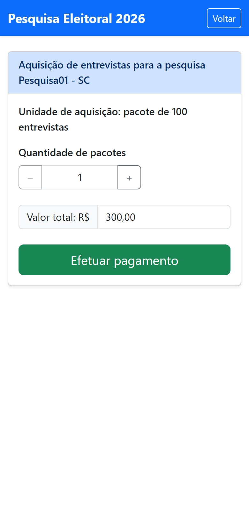

Parte 3 — Modo de operação
6. Adquirir entrevistas
As entrevistas são o “combustível” da sua pesquisa: cada entrevista concluída consome um crédito. Você adquire esses créditos em pacotes de 100 entrevistas. No painel de gestão, toque em Adquirir entrevistas.

6.1 Escolher a quantidade
- Em Quantidade de pacotes, use os botões − e + para definir quantos pacotes de 100 deseja.
- O Valor total é calculado automaticamente e mostrado na tela.
- Toque em Efetuar pagamento.
Uma janela confirma que você será direcionado(a) ao serviço de pagamento. Concluído o pagamento, os créditos entram no saldo da pesquisa.
6.2 Como o valor é calculado
- Cada um dos 10 primeiros pacotes: R$ 300 (ou R$ 250 com código de desconto).
- A partir do 11º pacote: R$ 200 cada — ou seja, quanto maior o volume, menor o custo por entrevista.
6.3 Código de desconto
Se você recebeu um código de desconto (por exemplo, de um consultor comercial), registre-o pelo menu da tela de boas-vindas em Registrar código de desconto. Com o código válido, o preço dos 10 primeiros pacotes cai para R$ 250 cada.